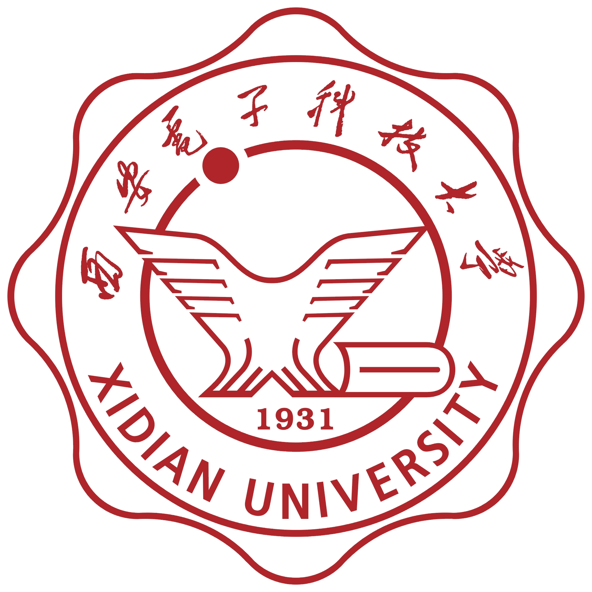
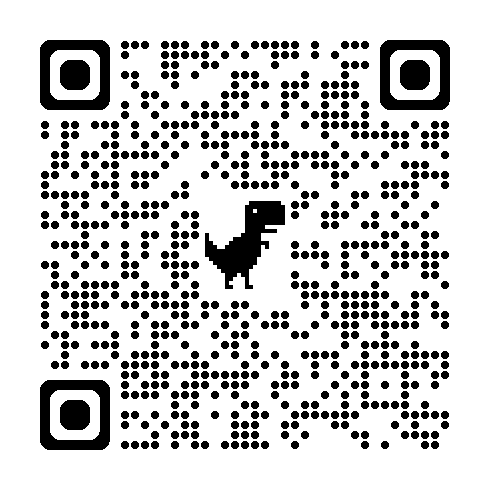
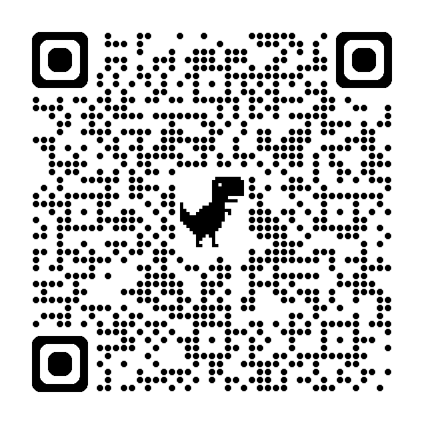
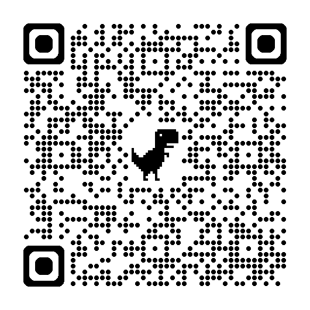
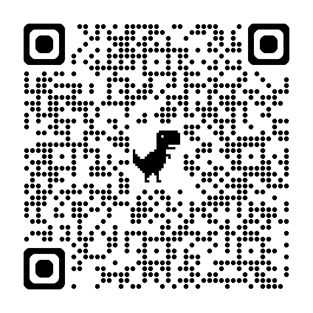

高树林 (EN ➩) 

2020.09 - 2024.07 ,华北水利水电大学工学学士、荣誉学士学位 【学位论文】 【PPT】
2024.09- 今 ,西安电子科技大学硕士研究生在读（推免生）
邮箱 : gosling123456@outlook.com 排名 : 1 / 60, 【排名证明】 绩点 : 4.04 / 5.0 【成绩单】
[Github主页] [CSDN主页] [简历 (如果您有意向招收我为实习生或博士研究生)]
研究领域
- 华北水利水电大学优秀毕业生奖金 && 河南省优秀毕业生, 华北水利水电大学教育基金 颁发, 优秀毕业生奖学金 , 2024
- 华北水利水电大学自强助学金, 华北水利水电大学教育基金 颁发, 国家级竞赛奖金 , 2024
- 国家励志奖学金, 河南省教育厅 颁发, 颁发给专业前三名 , 2023 (专业前5%) 【查看证书】
- 国家励志奖学金, 河南省教育厅 颁发, 颁发给专业前三名 , 2022 (专业前 5%) 【查看证书】
- 华北水利水电大学自强助学金, 华北水利水电大学教育基金 颁发, 专业优秀学生的荣誉奖金 , 2022 (专业前 1%)
- 国家励志奖学金, 河南省教育厅 颁发, 颁发给专业前三名 , 2021 (专业前 5%) 【查看证书】
- 第九届中国国际“互联网+”大学生创新创业大赛河南赛区选拔赛 河南省教育厅,授予 团队二等奖, 2023.08 (负责人，全省前30%),【查看证书】
- 第九届中国国际“互联网+”大学生创新创业大赛河南赛区选拔赛 河南省教育厅,授予 团队二等奖, 2023.08 (核心成员，全省前30%),【查看证书】
- 第九届中国国际“互联网+”大学生创新创业大赛河南赛区选拔赛 河南省教育厅,授予 团队二等奖, 2023.08 (核心成员，全省前30%),【查看证书】
- 第九届中国国际“互联网+”大学生创新创业大赛河南赛区选拔赛 河南省教育厅,授予 团队三等奖, 2023.08 (核心成员，全省前50%),【查看证书】
- 第九届中国国际“互联网+”大学生创新创业大赛河南赛区选拔赛 河南省教育厅,授予 团队三等奖, 2023.08 (核心成员，全省前50%),【查看证书】
- 第九届中国国际“互联网+”大学生创新创业大赛河南赛区选拔赛 河南省教育厅,授予 团队三等奖, 2023.08 (核心成员，全省前50%),【查看证书】
- 第九届中国国际“互联网+”大学生创新创业大赛河南赛区选拔赛 河南省教育厅,授予 团队三等奖, 2023.08 (核心成员，全省前50%),【查看证书】
- 第16届中国大学生计算机设计大赛总决赛,中国大学生计算机设计大赛组委会授予二等奖,2023.08(负责人，全国前30%),【查看证书]
- 第16届中国大学生计算机设计大赛总决赛,中国大学生计算机设计大赛组委会授予三等奖,2023.08(核心成员，全国前50%),【查看证书】
- 全国大学生物联网设计竞赛（华为杯）西北分赛区决赛,全国大学生物联网设计竞赛西北分赛区组委会授予一等奖,2023.08(负责人，前10%),【查看证书】
- 第25届中国机器人及人工智能大赛总决赛,中国机器人及人工智能大赛组委会授予二等奖,2023.07(核心成员，全国前30%),【查看证书】
- 挑战杯河南省大学生课外学术科技作品竞赛（大挑）,河南团省委授予一等奖,2023.07(负责人，全省前10%),【查看证书】
- 挑战杯河南省大学生课外学术科技作品竞赛（大挑）,河南团省委授予二等奖,2023.07(负责人，全省前30%),【查看证书】
- 第25届中国机器人及人工智能大赛河南省省赛,中国机器人及人工智能大赛河南组委会授予一等奖,2023.06(负责人，全省前10%),【查看证书】
- 第25届中国机器人及人工智能大赛河南省省赛,中国机器人及人工智能大赛河南组委会授予二等奖,2023.06(负责人，全省前30%),【查看证书】
- 第16届中国大学生计算机设计大赛河南省省赛,中国计算机程序河南组委会授予一等奖,2023.05(核心成员，全省前10%) ,【查看证书]
- 第16届中国大学生计算机设计大赛河南省省赛,中国计算机程序河南组委会授予一等奖,2023.05(核心成员，全省前10%), 【查看证书】
- 第16届中国大学生计算机设计大赛河南省省赛,中国计算机程序河南组委会授予三等奖,2023.05(核心成员，全省前50%), 【查看证书】
- 蓝桥杯程序设计大赛河南省省赛, 蓝桥杯组委会授予个人二等奖,2023.04(全省前30%), 【查看证书】
- 团队程序设计天梯赛, 中国高等学校计算机教育研究会授予个人三等奖,2023.04(全省前50%), 【查看证书】
- 河南省大学生创新创业训练项目（参与） 工程天眼--智慧工程危险区域安全巡检器 2023.12 - 2024.12 
- 华北水利水电大学创新创业训练项目（参与） 吾驾之宝--安全驾驶行为监测预警系统 2022.12 - 2023.12 
- 华北水利水电大学创新创业训练项目（主持） 智能轮式监控机器人 2022.12 - 2023.12 
- 华北水利水电大学创新创业训练项目（主持） 智能育苗 2021.12 - 2022.12 
构建一个智能化的施工现场安全监控系统，通过实时监测高危区域并预警潜在的安全风险，以降低施工现场的事故发生率。在这个项目中，我利用Yolo-Fastest框架进行目标检测，以识别安全帽佩戴情况和人员行为。结合Mediapipe进行骨骼匹配，实现跌倒检测，以快速响应可能的安全事故。通过设计端侧云侧协同部署策略，优化数据处理流程，提升系统响应速度。实现危险区域自动化监测，并进行全程识别和预警。
开发一套基于AIoT技术的安全驾驶行为检测预警系统。该项目通过集成疲劳检测算法、行为识别模型、视频推流与加密技术，以及多种传感器设备，实现了对驾驶员疲劳和分心行为的实时监测与预警。我负责了系统的概要设计、详细设计、硬件选型、软件开发及测试验证工作，确保了系统在各种光照环境下的高准确率识别和稳定运行。此外，我还设计了微信小程序用于数据展示，提高了用户体验，为营运车辆安全管理提供了有效的技术解决方案。
开发了一款智能机器人，名为"慧眼宝"，用于幼童的安全监护和亲子陪伴。利用红外传感器和超声波传感器以及摄像头和扬声器该机器人具备障碍感知、获取图像、动态决策和语音交互能力，能够自主导航并跟随幼童，同时检测危险场景并通过音频提示信号提醒监护人。最终开发了是一款功能全面的智能机器人，为幼童提供全方位的安全保护和富有趣味的互动体验。该机器人在2023年中国大学生计算机设计大赛中获得了国家级二等奖。
开发了一款智能育苗系统，以帮助农民自动化地对农作物进行灌溉、通风、补光与遮荫，从而为作物提供最适宜的生长环境。该系统通过多种传感器采集环境信息，包括土壤湿度、气温、光照强度等，同时利用树莓派作为下位机来控制各种舵机，实现自动化控制。项目范围涵盖了从需求分析、硬件设计、软件编程到系统测试的全过程。我的主要任务是利用Python编写树莓派控制程序，处理传感器数据，并根据数据调整舵机动作，以实现自动化育苗。
- 梦孚（上海）教育科技有限公司【实习证明】 AI项目导师 2024.06 - 2024.08
- 北京合众伟奇科技股份有限公司【实习证明】 数据分析师 2023.07 - 2023.10
蛋白质盲突变预测：提出了一种新颖的方法，通过整合蛋白质的一级和三级结构，使用等变图神经网络（Equivariant Graph Neural Network, EGNN），预测蛋白质突变的影响。利用EGNN整合蛋白质的一级和三级结构，捕捉蛋白质的全局和局部表示。通过Transformer模型ESM-2对蛋白质序列进行语义嵌入，提取蛋白质序列的进化信息。使用EGNN对蛋白质的几何结构进行拓扑编码，捕捉蛋白质的微观环境和局部结构。引入随机扰动，模拟自然突变，防止模型过拟合。通过比较突变前后的蛋白质序列嵌入，计算适应度分数，评估突变蛋白的稳定性。
多发性硬化症的可调整长时间FLAIR MRI估计/合成：通过深度学习技术提高病变区域分割的精确度，辅助医疗诊断与治疗。项目的核心工作包括对脑部MRI图像数据集进行预处理，确保数据适配深度学习模型的需求。在模型开发方面，我们首先采用了经典的U-Net架构，随后引入了注意力机制以增强模型对关键区域的识别能力。此外，利用预训练的ResNet34模型，我们构建了一个特征提取能力更强的U-Net模型，尝试加速训练过程并提升性能。在损失函数方面，我们不仅实现了基础的Dice Loss，还尝试了SoftIoULoss和CalcLoss，以优化模型的训练过程。通过设计包含数据增强、学习率调整和批次大小选择的训练流程，我们进行了多轮实验，细致地调整了模型参数和训练策略。性能评估主要依赖Dice Similarity Coefficient (DSC)这一指标，通过它我们对比分析了不同模型结构和损失函数的性能。项目结果显示，基础U-Net模型在测试集上达到了约90%的DSC值，而引入注意力机制后，DSC值提升至91.45%，表明了模型性能的显著提升。ResNet34+U-Net模型也表现良好，DSC值达到了91.17%，且训练速度更快。
AI壁画修复技术研究与开发：旨在利用先进的AI算法攻克文物修复难题，特别是针对壁画的数字化修复工作。选择并训练现有的Muralnet模型，采用对抗生成网络技术来优化壁画修复效果。配置和维护实验环境，包括Python 3.7、PyTorch 1.6，以及NVIDIA GPU RTX2080ti等硬件资源。设定和调整模型参数，包括训练模式、非极大值抑制、随机种子等，以适应不同实验需求。使用Python进行图像降噪和边缘提取，采用Canny算子实现最佳边缘检测效果。统一处理不同尺寸的壁画图像，进行数据预处理，以提高模型训练的准确性和效果。对模型进行训练和测试，记录和分析输入图片、原图线稿、得到图片和预期效果的对比。实现了壁画图像的初步修复和颜色补充，提升了修复效率和质量。通过实验发现并提出了模型参数和训练策略的优化方向，为模型的进一步改进奠定了基础。探索了数据处理的高效方法，减少了单张图片的处理时间，提高了整体工作效率。
旋律魔方：旨在将人声哼唱的旋律转化为音乐作品，为音乐创作提供创新途径。我负责音频处理、特征提取、音符识别、序列生成以及使用循环神经网络（RNN）和长短期记忆网络（LSTM）进行序列建模和音乐续写算法的开发。通过训练模型识别哼唱旋律并生成伴奏，我确保了系统的技术实现准确、音乐质量具有艺术性，并优化了用户体验。项目最终实现了65.7%的准确率
1.设计电表OCR模型：负责设计、集成OCR模型，通过自适应图像裁剪方式提高裁剪后各小图的识别速度,以统计方式改善边界文字信息,提升识别精度;通过模型并行处理方式能够提高识别速度，解决了现有OCR技术主要采用压缩图片大小的方式来缓解大尺寸图像,使得检测到的文本信息被遗漏,导致识别精度降低以及深度学习算法对运行环境要求较高,在普通配置的硬件上运行速度稍差的问题。
2. 研发电力巡检安全监测模型：参与现场作业智慧模型研发工作，针对电力巡检的工人的安全穿戴服装（如安全帽、工作服、绝缘手套、绝缘鞋等保证安全的设备）规范进行监测。模型基于Paddle框架开发，主要利用PicoDet和PP-yoloe网络训练模型，再模型做量化处理使模型轻化。此外负责模型的修正和数据审核修正的工作。
3. 优化图像清晰度：参与并解决了现场关键信息图像不清晰的问题，利用超分辨率模型处理和生成对抗网络生成原图像。